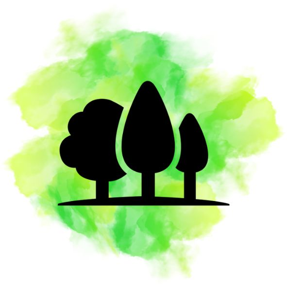
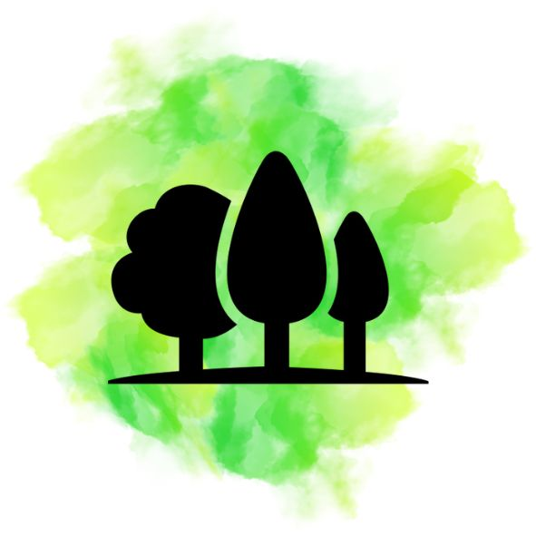

Turismo
Basilicata está llena de destinos fascinantes, ¿Estás listo para descubrirlos?
Nuestro top 3 de lugares para visitar
Matera
Es una de las ciudades más antiguas aún habitadas del mundo. Un lugar mágico que conserva, en sus cuevas naturales excavadas en la roca, evidencias de asentamientos humanos desde el Paleolítico. A lo largo de los siglos, lo que se convertiría en el símbolo de la ciudad se modeló en estructuras cada vez más complejas en los dos grandes anfiteatros naturales en los que se desarrolló el núcleo original.
Visitar Matera, situada en una meseta calcárea de Basilicata caracterizada por profundas fisuras, barrancos, rocas y cuevas, genera la sensación de entrar en un pesebre.
Un paseo por las calles de la Civita, el núcleo más antiguo de la ciudad, una densa red de cavernas, excavadas en la roca por los pastores para dar refugio a sus familias y al ganado.
Casas, iglesias, monasterios y ermitas se construyeron en las cuevas naturales de la Murgia, en un paisaje evocador que fue elegido como escenario de películas como "La Pasión de Cristo" de Mel Gibson y "El Evangelio según San Mateo" de Pier Paolo Pasolini.
Hay que decidir qué ver en Matera y por dónde empezar a explorar esta "segunda Belén". Aconsejamos empezar por el núcleo histórico, los llamados Sassi di Matera, dos barrios declarados Patrimonio de la Humanidad UNESCO en 1993
Descubrir los Sassi significa pasear por la historia de la ciudad, moverse entre las cuevas y los pasajes subterráneos del Sasso Caveoso, donde las antiguas viviendas rupestres han permanecido intactas a lo largo de los siglos, y perderse entre las tiendas del Sasso Barisano, deteniéndose en los miradores para admirar las vistas únicas que puede ofrecer esta ciudad.
Visitar la Casa Cueva de Casalnuovo para descubrir cómo se vivía en estas estancias hasta 1958, cuando la población abandonó las cuevas y se trasladó a barrios más modernos.
Al este de la ciudad, en el Parque de la Murgia Materana, visita las iglesias rupestres de Matera, uno de los rasgos más distintivos del asentamiento. Más de 150 lugares de culto construidos entre el Alto Medioevo y el siglo XIX, vinculados a fases históricas, sociales y religiosas concretas de la zona.
Imperdible la Cripta del Pecado Original, una iglesia rupestre de la época longobarda que se caracteriza por un ciclo de frescos que le ha valido el apelativo de "la Capilla Sixtina de los rupestres".
Potenza
La provincia de Potenza, en Basilicata, es una zona auténtica que se distingue por una increíble variedad de paisajes. Lugares vírgenes, pueblos tranquilos y playas encantadoras.
Enclavada entre los Apeninos y con vistas al valle del río Basento, Potenza es una ciudad para recorrer totalmente a pie. Construido en vertical, está equipado con una serie de escaleras mecánicas que facilitan el desplazamiento de un lugar a otro. El centro histórico, en su mayor parte peatonal, es un cruce de historia y cultura de toda Italia. No te pierdas la Via Pretoria, la iglesia de San Miguel Arcángel y el templo de San Gerardo, patrón de la ciudad. Si buscas socializar, recomendamos la Piazza Mario Pagano, la más famosa de Potenza y lugar de encuentro de sus habitantes.
La ciudad de Venosa, también conocida como la ciudad de Horacio, es uno de los principales atractivos de la región con su gran variedad de monumentos, experiencias y actividades. Desde el castillo aragonés hasta la abadía de la Santísima Trinidad, pasando por las termas y la casa del gran poeta de la Roma imperial son algunas de las visitas obligadas.
La única salida al mar de la provincia es la costa de Maratea, pero es toda la zona que rodea Potentino la que está llena de sorpresas, sobre todo desde el punto de vista naturalista. Salir de Vulture, un volcán extinto situado al norte de la provincia, para después dirigirse a los Lagos de Monticchio y las Cascadas de San Fele, también situados en la zona.
Una experiencia que debes incluir, sobre todo si eres un adicto a la adrenalina, es el Vuelo del Ángel. De hecho, se lleva a cabo a una altitud aproximada de 1100 a 800 metros sobre el nivel del mar. La longitud es de unos 1452 metros y se pueden alcanzar velocidades cercanas a los 130 km/h.
Por último, la frutilla del postre, el Parque Nacional del Pollino. Esta vez nos encontramos en la zona sur de la provincia de Potenza y, en concreto, entre Basilicata y Calabria, entre las provincias de Cosenza, Potenza y Matera. Aquí, el senderismo en altitud es una experiencia casi mística.
Maratea
La costa de Maratea, 32 km de litoral en la vertiente tirrena de Basilicata, famosa en el mundo entero por la riqueza y belleza de sus fondos marinos. Hay pequeñas playas donde relajarse al sol y refrescarse en las aguas cristalinas.
Un mar cristalino, playas de arena fina que se alternan con escarpados acantilados rocosos y un centro histórico rico en arte sacro, ver el juego de luces al atardecer y disfrutar una cena en uno de los característicos restaurantes del puerto.
Un modo diferente de conocer el mar es un tour en barco por la costa para visitar las muchas cuevas marinas que abundan en el litoral. Es una preciosa perla engastada en el Golfo de Policastro, con la imponente estatua del Redentor.
Conocida como la Perla del Tirreno o la Ciudad de las 44 Iglesias, Maratea fascina y asombra a quienes la visitan por primera vez, y también a quienes vuelven para descubrir lugares nuevos e insólitos que no se encuentran en ningún otro lugar de Italia.
Maratea es una ciudad llena de lugares que no hay que perderse, monumentos que admirar y cuevas que explorar. La playa negra de Maratea, situada en la localidad de San Giuseppe, a un paso del caserío de Marina di Maratea, es un emblema de la ciudad. A diferencia de las demás playas de la costa, cuenta con la Grotta della Sciabella, una cueva encantadora y poco conocida.
Pero es la Cueva de las Maravillas la que deja a todos boquiabiertos. Descubierta en 1929, la cueva consta de una gran sala de 70 metros de largo por 20 de ancho y es la cueva turística más pequeña de Italia.
Dominando la ciudad desde la cima rocosa del Monte San Biagio se encuentra la estatua del Cristo Redentor concebida a finales de los años 60 por el artista Bruno Innocenti, y que, con 21 metros de altura, se convirtió inmediatamente en un icono de la ciudad. Por último merece la pena visitar la Basílica de San Blas y la Iglesia de Santa Maria Maggiore.
Que actividades hacer al aire libre en Basilicata.
Basilicata es ideal para los amantes de la naturaleza.
La mayor parte del territorio lucano está ocupado por montañas, bosques y selvas, un paisaje espectacular donde regenerarse, divertirse y comer bien todo el año. En invierno, un manto blanco cubre las altas cumbres.
Pero también en verano la montaña es un lugar ideal para quienes les gusta andar por los senderos, simplemente descansar o hacer actividades como:
- Escalada
- Andar a caballo
- Andar en bicicleta
El agua es un elemento determinante en el paisaje de esta tierra. Torrentes y arroyos que bajan de las montañas, lagos rodeados de una naturaleza exuberante, y el mar.
Un mar que permite practicar numerosas actividades como:
- Rafting
- Barranquismo
- Piragüismo
- Vela
- Buceo
- Pesca
 
